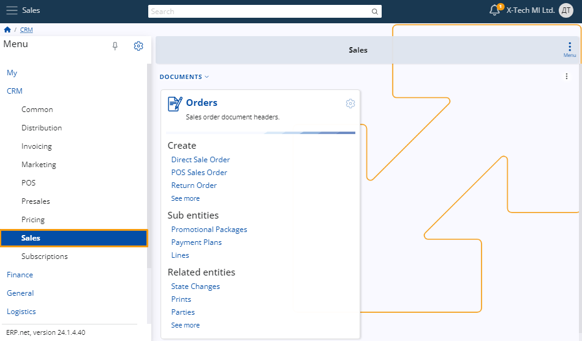
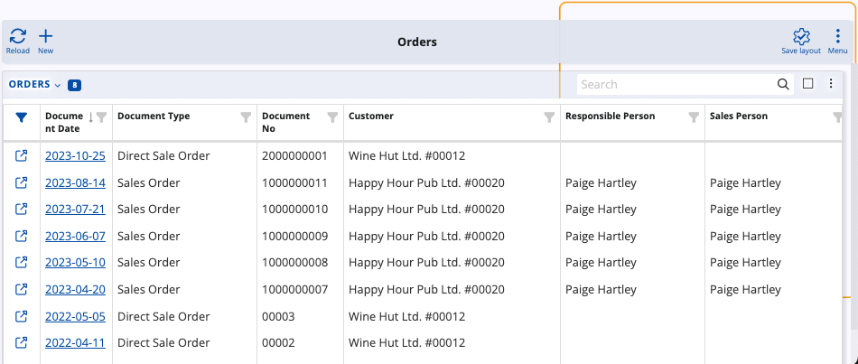
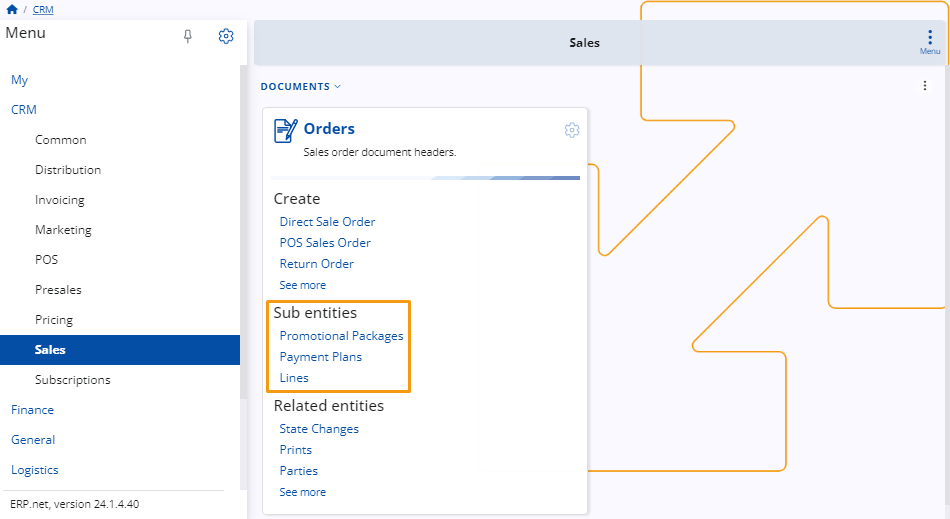
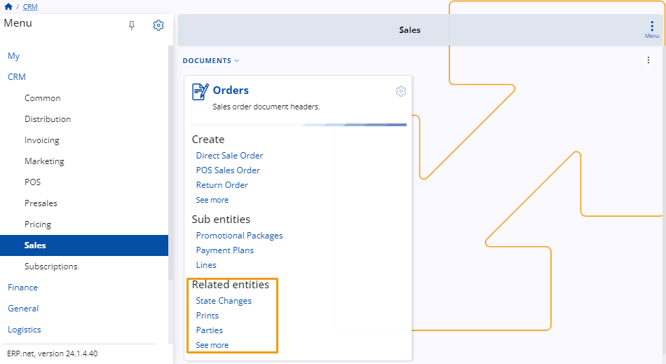

Sales
The Sales module plays a pivotal role in documenting sales operations within ERP.net. It is through here that you can preview, create and release different kinds of sales orders.
Consisting of one panel, Sales consolidates essential functionalities for creating and managing sales orders and their related entities.
It also makes use of previously specified sales order definitions that are necessary for the creation of the respective documents.

Orders panel
This panel serves as the central hub of the Sales module, allowing you to access all of your existing sales orders as well as instantly begin creating new ones.
It consists of three main sections: Create, Sub Entities, and Related Entities.

To see your sales order documents, simply click on the panel's title.
This takes you to the Orders page containing all sales orders related to your enterprise company.
From here, you can preview each and every one of them, filter the table to show entries matching specific criteria, and create new orders on-demand.

Create
You can use this section of the Orders panel to begin creating various types of sales orders.
Options include Direct Sale Orders, POS Sales Orders, Return Orders, and more.

Sub entities
This section allows you to preview already created definitions that take part in the final sales order document.
It includes seeing promotional packages, payment plans, and sales order lines.

Related entities
In this section, you can track various operations associated with sales orders.
This includes monitoring state changes, prints, parties, line amounts, and order fulfillment.

Learn more about Sales here:
Note
The screenshots taken for this article are from v24 of the platform.